Практична робота №10: Створення API для управління базою даних з використанням FastAPI та SQLAlchemy
Завдання 1: Встановлення необхідних бібліотек
- 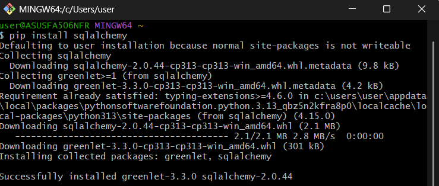
- 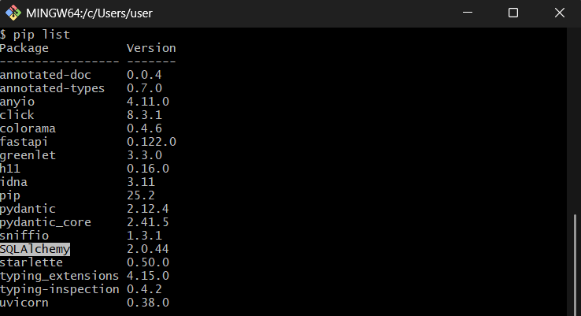
Завдання 2: Створення структури проекту
- 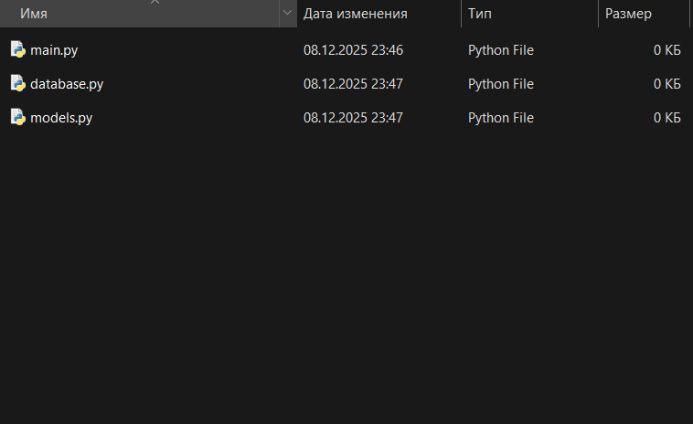
Завдання 3: Налаштування бази даних (database.py)
- 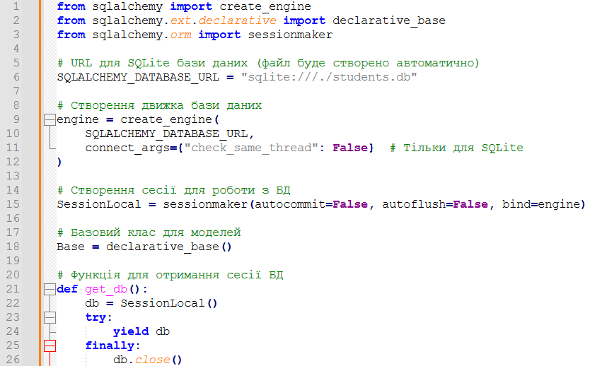
Завдання 4: Створення моделей (models.py)
- 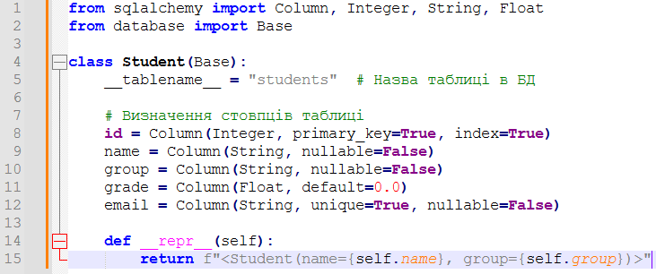
Завдання 5: Створення API endpoints (main.py)
- 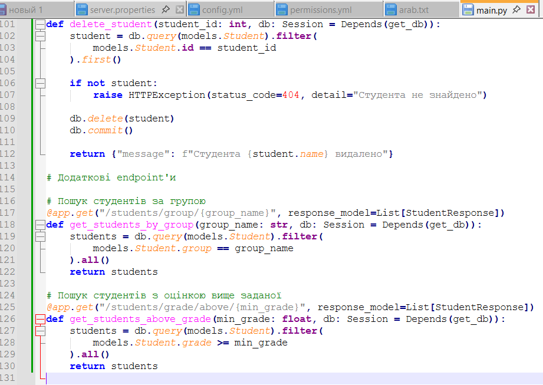
Завдання 6: Запуск та тестування API
- 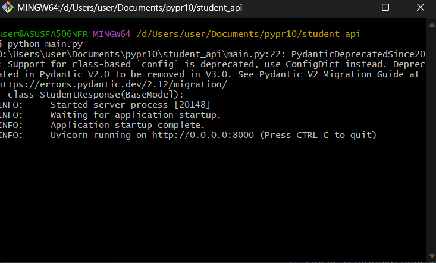
- 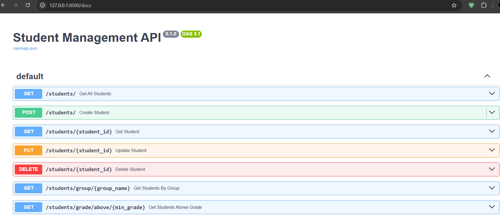
- 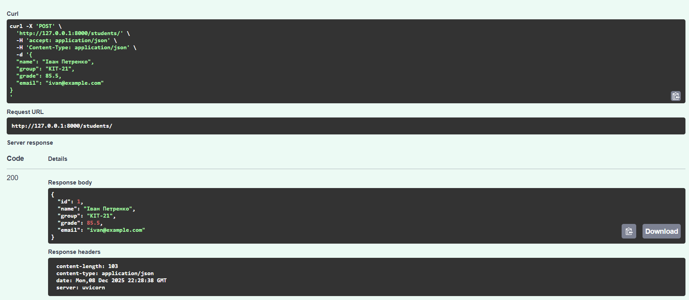
- 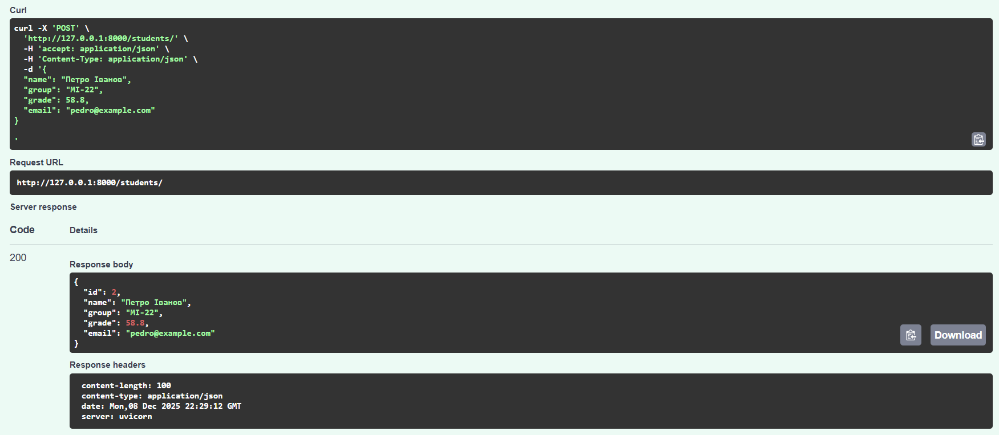
- 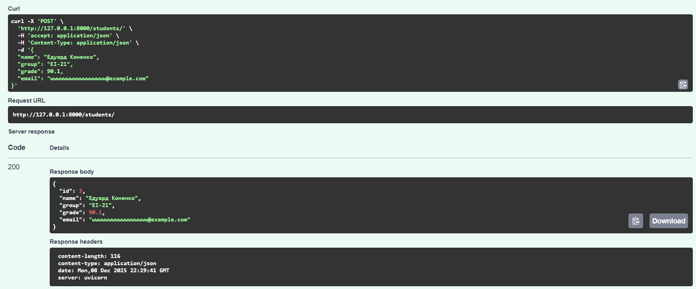
- 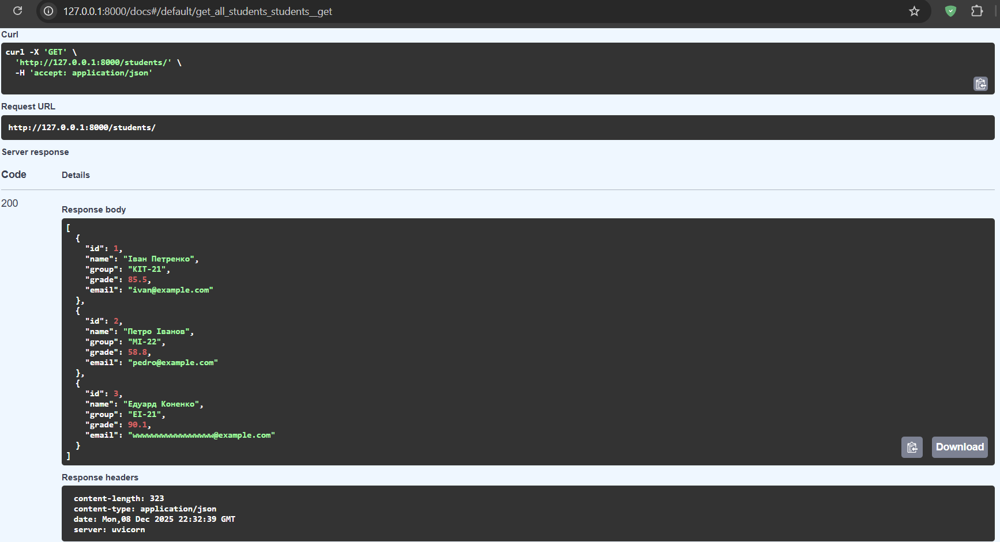
- 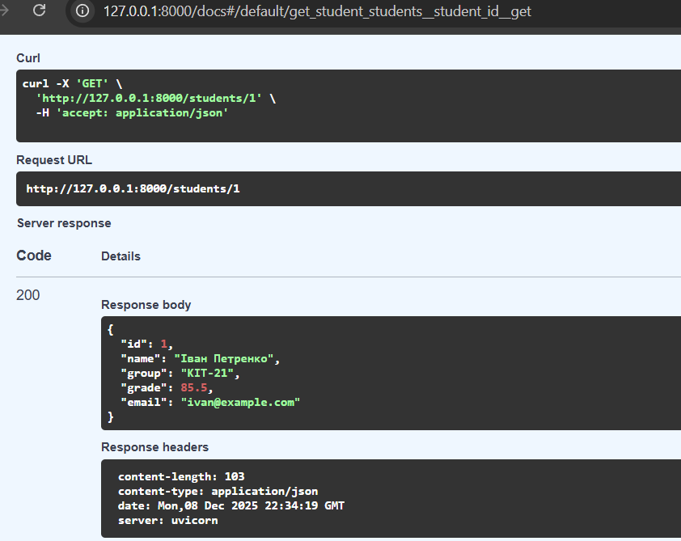
- 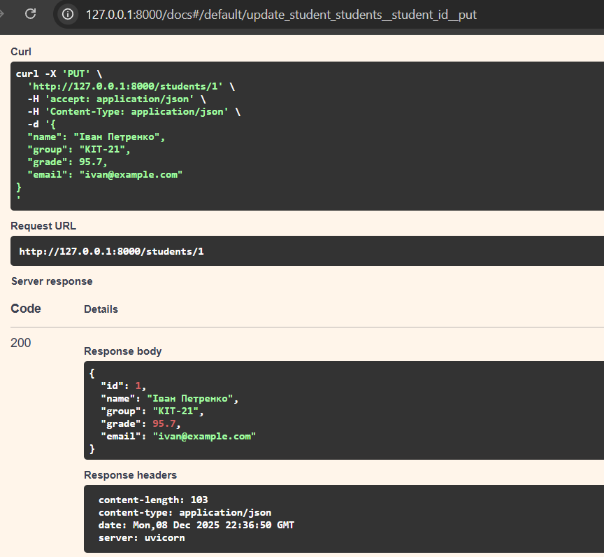
- 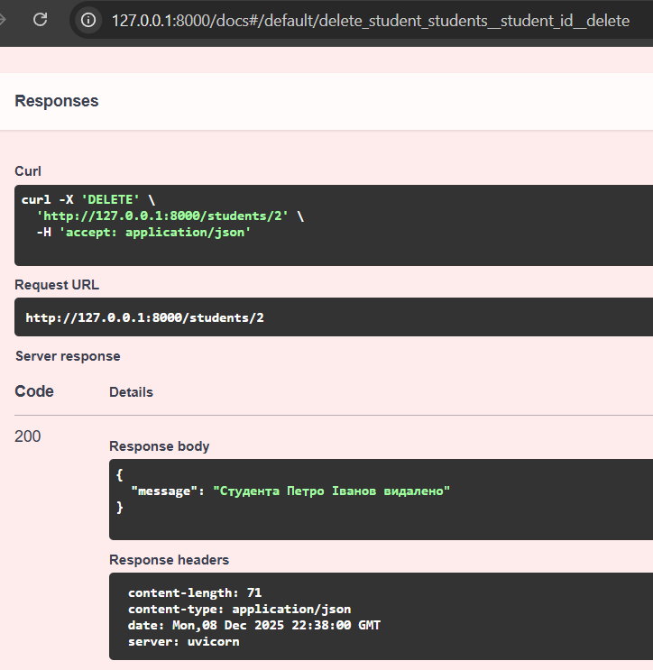
Завдання 7: Самостійна робота - Розширення функціоналу
- 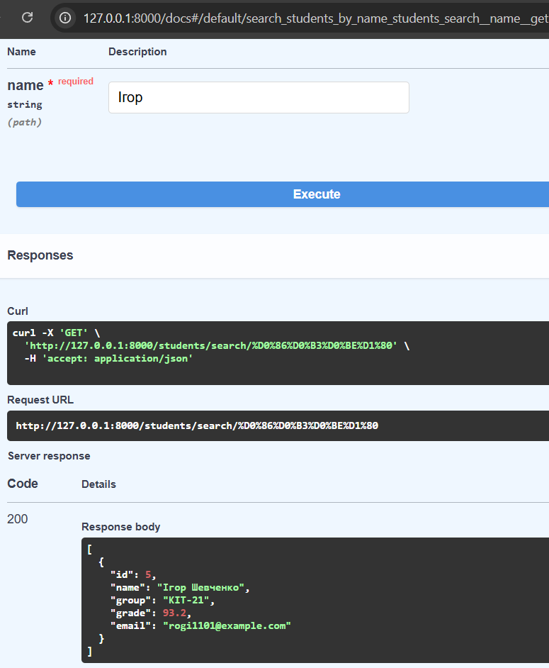
- 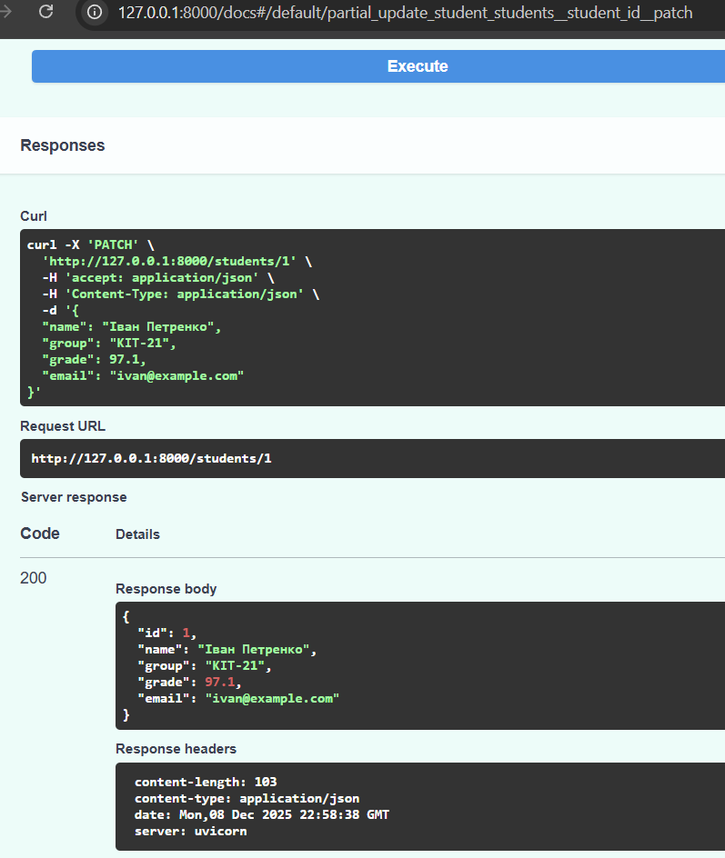
- 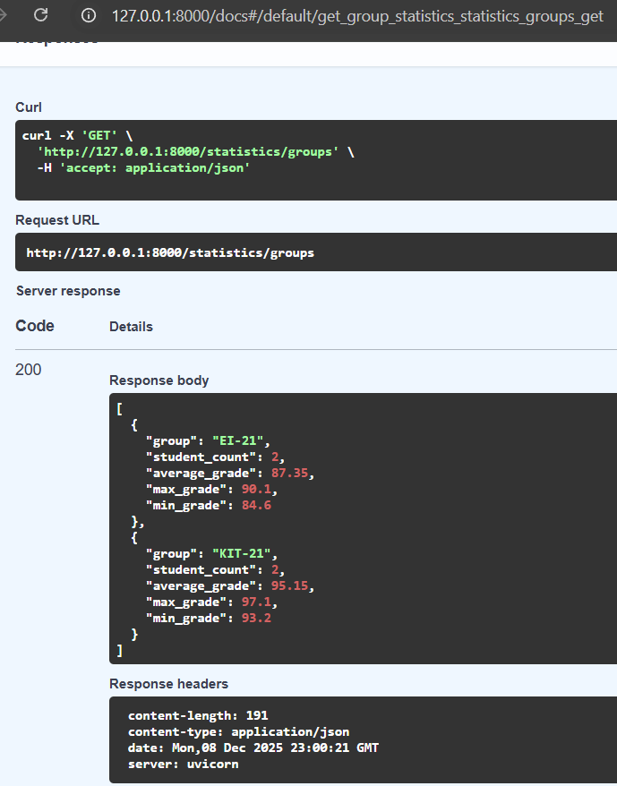
Завдання 8: Робота з транзакціями
- 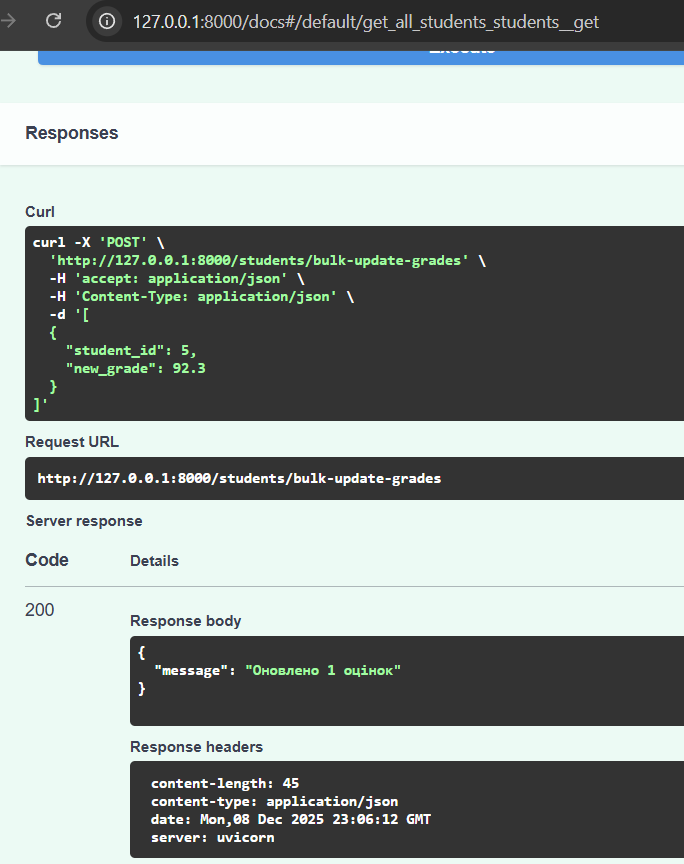
Контрольні питання
- ORM (Object-Relational Mapping) це технологія, що дозволяє працювати з базою даних через об’єкти мови програмування (Python) замість написання SQL‑запитів вручну. Потрібен для:
- Спрощення взаємодії з базою даних
- Підвищення читабельності коду
- захисту від SQL‑ін’єкцій
- легкого перенесення між різними СУБД.
- Переваги використання SQLAlchemy:
- Універсальність: підтримує різні СУБД (SQLite, PostgreSQL, MySQL).
- Автоматична генерація таблиць із Python‑класів.
- Вбудована валідація та безпека.
- Гнучкість: можна комбінувати ORM‑підхід із "чистим" SQL.
- Зручність у підтримці великих проєктів.
- Кожна літера в абревіатурі CRUD означає:
- C (Create): створення запису.
- R (Read): читання даних.
- U (Update): оновлення запису.
- D (Delete): видалення запису.
- Depends(get_db) потрібно використовувати тому, що Depends(get_db) у FastAPI автоматично створює та закриває сесію бази даних для кожного запиту, а це гарантує:
- правильне керування ресурсами
- відсутність "висячих" з'єднань
- чистоту коду (менше повторів).
- Різниця між PUT та PATCH методами:
- PUT: повне оновлення ресурсу (замінює всі поля).
- PATCH: часткове оновлення (змінює лише передані поля).
- Транзакція це набір операцій із БД, які виконуються як єдине ціле. commit() фіксує зміни в БД, робить їх постійними, без commit() зміни залишаються лише у тимчасовій сесії.
- db.refresh(obj) оновлює об’єкт із актуальними даними з БД після commit.
- Якщо не викликати db.close(), то сесія залишиться відкритою. Це може призвести до:
- витоку ресурсів
- блокування таблиць
- зниження продуктивності при великій кількості запитів.